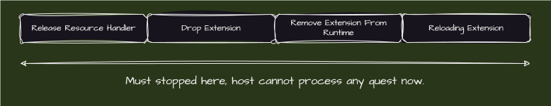

使用 Rust 实现拓展系统札记
Rust 在生产上的优势十分明显了，极高的性能和极致的资源体验。
但是对于我而言，总是觉得少了些什么——拓展系统。
方案选择
与我熟悉的 JVM 平台不同，JVM 平台通过在虚拟机内运行时链接的方式实现稳定的 ABI。这是稳定性和可控性极高的实践，很符合 JVM 的特性。
而 Rust 所属的 Native 平台需要通过系统的链接器——比如 ld 等——这涉及到平台提供的动态链接功能。
但是除此之外，在 Rust 生态里，甚至是新的编程语言生态里，产生了一种新的拓展架构——加载 wasm 文件作为拓展。
综上所述，我们有两种可以考虑的架构：
- 原生平台拓展：通过加载
so、dylib、dll等动态库来实现拓展 - wasm 平台拓展：通过加载
wasm文件到 wasm 运行时，通过运行时获取拓展能力
接下来，我们将深入了解两种插件平台的实现上的区别。
原生平台
原生平台实现需要依赖编译器的 ABI 稳定，但是新时代的原生语言（Rust，Go，Crystal 等）基本上都没有稳定的 ABI，所以需要依赖 C 的稳定的 ABI 来曲线救国。
但有个例外，Rust 平台存在 abi_stable 这个 crate，因此我们也可以通过它来实现。
也就是说，对于原生平台，我们现在有了两种选择：
libloading：轻易加载动态库abi_stable：安全的 Rust FFI 包装
libloading 的原理十分简单粗暴，就是利用链接器查找符号检查是否符合目标期望，如果期望则包装成为 Rust 的对象实例，方便调用。这也是标准的原生插件加载流程。
abi_stable 则使用分析修改 miri 等方式固化 ABI，并且实现了 Rust 标准库包装使得标准库 ABI 也进一步稳定，再继承 libloading 的流程使得实现安全的 Rust FFI 拓展。
请参照我实现的 eloader 项目来理解 abi_stable 的具体流程和用法，该库实现了一套很简单基础的拓展加载器。
wasm 平台
TODO
限制？
和 JVM 不同，实现原生平台的拓展系统无法直接访问宿主的诸如静态变量等字段，这是处于安全性考虑，也是加载机制导致的。
原生平台上，一个程序的内存地址实际上是虚拟内存地址，也就是说是“假”的内存地址。
并且，对于一个变量或者函数而言，一旦被 static 修饰，那么它就是模块私有的，这和 JVM 平台的逻辑完全不一样。
或者说，JVM 的 ClassLoader 就是一个巨大的模块，因此可以肆无忌惮的访问 static 成员——因为他们就在同一个模块里。
也就是说如果要访问这些变量或者函数，需要一个中间人作为其中的代理——例如上下文设计模式，传入已经重定位完成的 Context 结构体，其中包含各种对静态的调用，则可以间接实现这点，并且 Nginx 和 Apache 等实现了拓展系统的宿主均使用这种模式。
资源卸载
我们先认知一下资源到底是什么：
- 文件句柄
- 网络句柄
- 事件资源
- ...
资源卸载是一种很难解决的问题——因为没有办法确定加载内容到底加载了什么资源，而且无法中断当前的状态实现卸载。
如果使用智能指针，例如引用计数等，实际上不能解决这个问题。资源卸载涉及到外部和系统的代数效应，程序内只能处理局部的代数效应。
理想环境
- 拓展向宿主申请资源句柄，不自己使用任何资源句柄
- 宿主重载拓展的时候会暂停当前任务，不再处理，然后等待拓展释放资源句柄
- 资源句柄释放完毕，宿主卸载所有拓展
- 卸载完毕，重新加载
